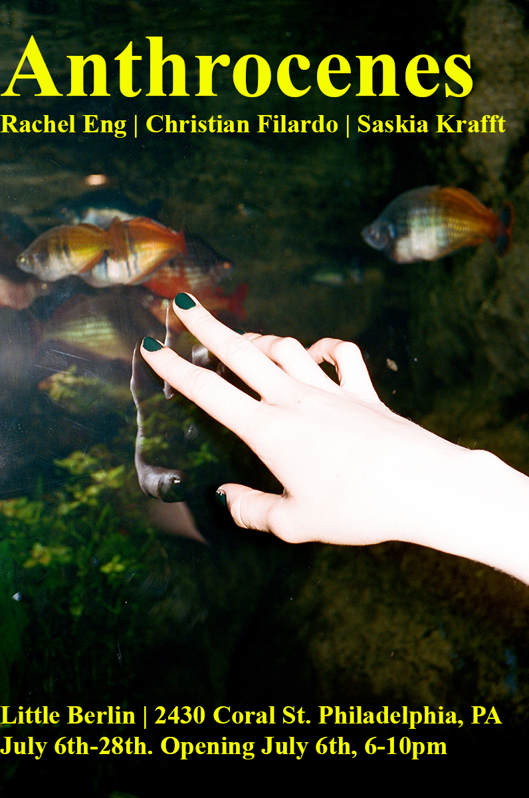

ANTHROCENES - OPENING RECEPTION
July 2019
Saturday, July 6, 2019
Opening July 6th form 6-10 PM On view: July 6-28th
Featured Artists:
- Rachel Eng
- Christian Filardo
- Saskia Krafft
In 1992, Journalist Andrew C. Revkin, wrote: "Perhaps earth scientists of the future will name this new post-Holocene period for its causative element—for us. We are entering an age that might someday be referred to as, say, the Anthrocene. After all, it is a geological age of our own making.” The first documented use of this word, Revkin’s article introduced into common vernacular an idea which described a powerful shift in understanding; By altering climate, landscapes, and seascapes as well as flows of species, genes, energy, and materials, we are sealing the fates of myriad other species. And, without a big shift from business-as-usual, we will undermine our own long-term welfare as well. After 27 years of percolation and debate, anthrocene (or the more common anthropocene) has become the closest thing there is to common shorthand for this turbulent, momentous, unpredictable, hopeless, hopeful time—duration and scope still unknown.
This exhibition brings together three artists examining the role of the human in the role of a broad and plastic understanding of a world ecosystem. The works of Rachel Eng, Christian Filardo, and Saskia Krafft all grapple with the tension between the individual and the accumulated. Tasked with reconciling their places in the world, the assembled artists each act as explorers of well-trod landscapes. Their methods act as systems of mapping, orienting both the artist and the viewer in relation to a world changing at a blistering rate. In the process, the collected works give the viewer an opportunity to meditate on the space of the individual as a piece of the the collective and reflect on the anthropocentrism of the world we recommit to on a daily basis.
Gallery Hours Sundays 12-4
